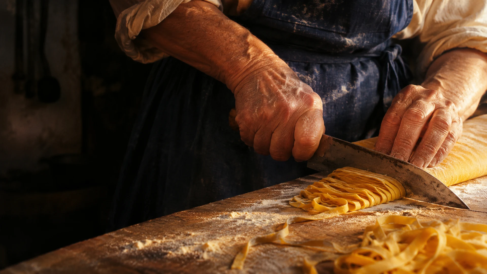
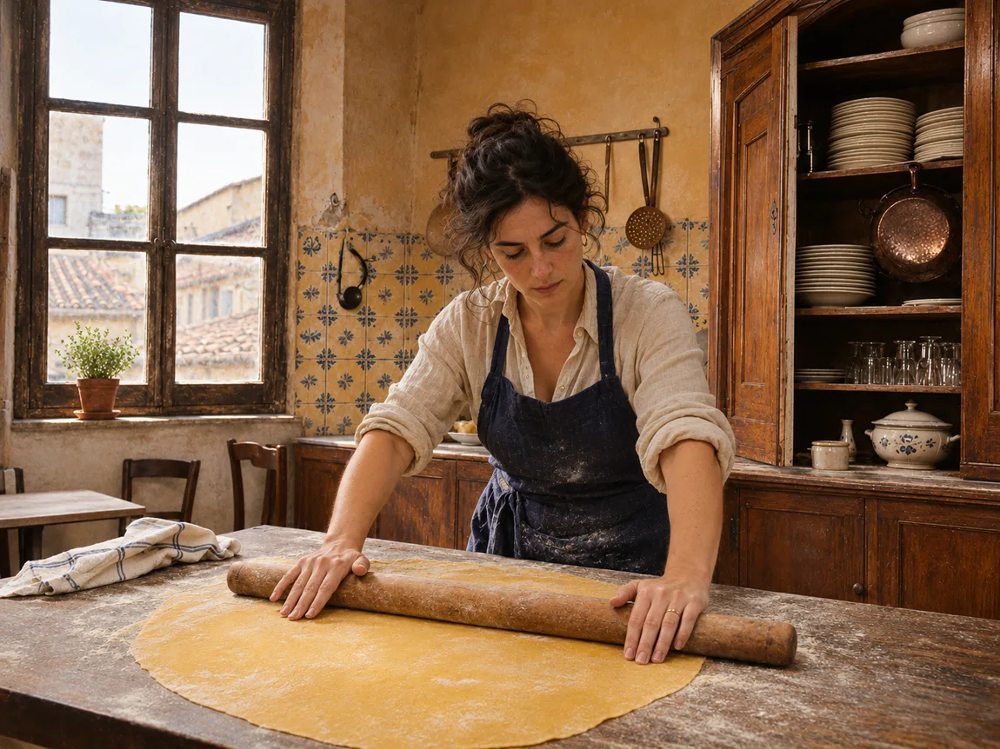
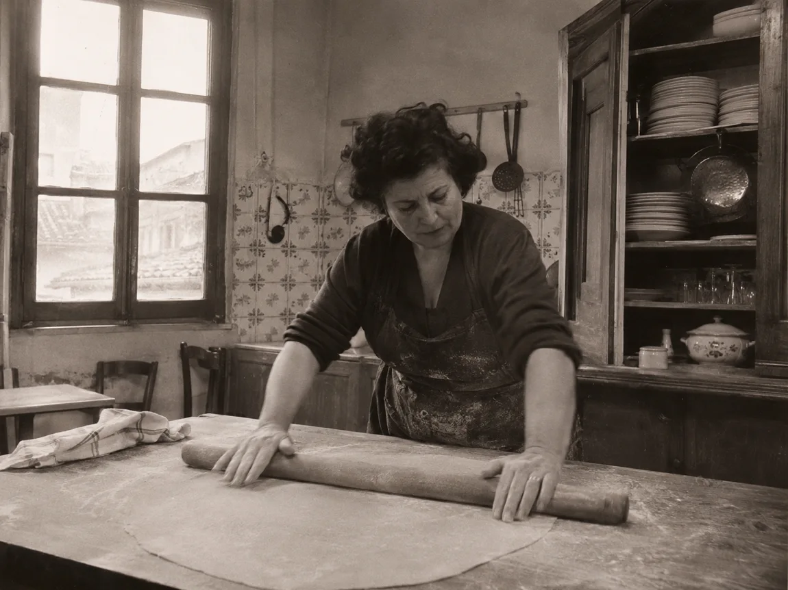

Osteria di BolognaDal 1982
Una serada Ordito.
Prima che si apra la porta, sul banco c’è già il rumore del coltello.
Il quaderno di famiglia
La stessa finestra.
Nel 1982 Ada sistemò il tagliere vicino al vetro. Quando la luce passava attraverso la sfoglia, era abbastanza sottile.
Oggi sua nipote Nina lavora lì. Ha cambiato il menu e il colore dei grembiuli. Per capire quando fermarsi, alza ancora gli occhi verso la finestra.
Sfoglia la carta

1982Oggi